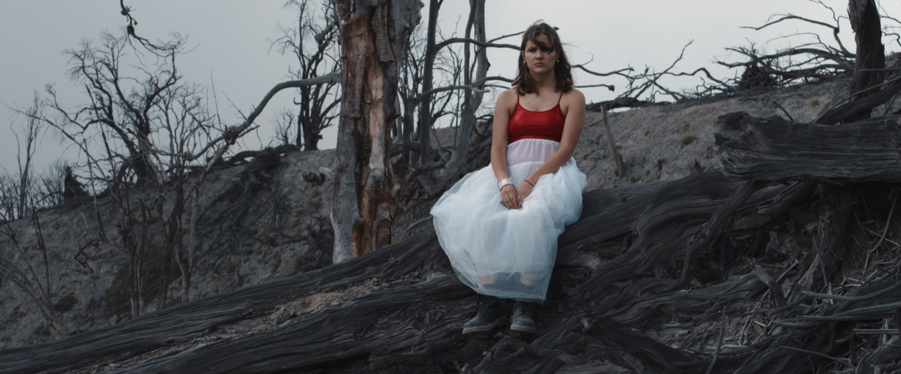

Muerte súbita
Un amor fugaz, ligero e inescapable. Pura ilusión.
- Muerte súbita
- Jaque mate
- Robo melodías
- La fiebre
Música que nace de experiencias personales vinculadas al amor, la búsqueda de sentido y los procesos de transformación interna.
El proyecto transita entre lo orgánico y lo electrónico, integrando elementos acústicos con texturas modernas. En vivo, la banda propone un espacio de conexión donde conviven la introspección y el movimiento.
Déjate atrapar, por este flow que te viene a guiar
— Jaque Mate
2026 — 2027
Un amor fugaz, ligero e inescapable. Pura ilusión.
Amor conflictivo. Traición, aislamiento y búsqueda de verdad.
La decisión de confiar sana la herida. Amor profundo, exigente.

Un recorrido emocional que alterna entre momentos íntimos y secciones de alta energía. Sin distancia entre artista y audiencia.